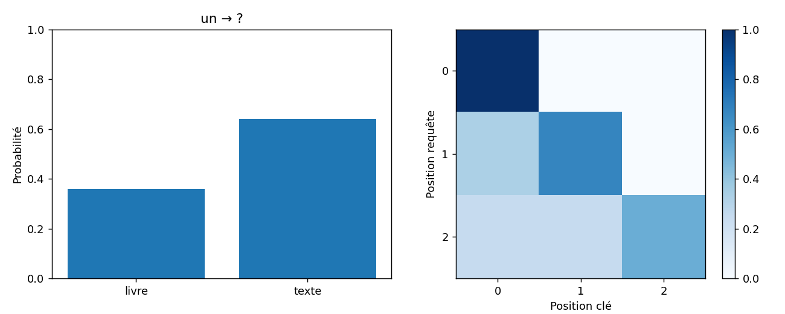

Ting Tan · EEEA · Oct 2026
Exécution de référence mesurée · données pédagogiques fictives
{
"sentences": 7,
"temperature": 0.5,
"attention_weights": [
[
1.0,
0.0,
0.0
],
[
0.3302384506733431,
0.6697615493266569,
0.0
],
[
0.2482550782577231,
0.2482550782577231,
0.5034898434845538
]
],
"attention_output": [
[
10.0,
0.0
],
[
3.302384506733431,
6.697615493266569
],
[
7.51744921742277,
7.51744921742277
]
],
"generation_model": "word-level empirical bigram",
"attention_example": "fixed illustrative Q, K, V; a separate calculation"
}| context | token | probability |
|---|---|---|
| un | livre | 0.36 |
| un | texte | 0.64 |
| seed | temperature | text |
|---|---|---|
| 1 | 0.5 | le professeur écrit un texte |
| 2 | 0.5 | le groupe |
| 3 | 0.5 | le groupe |

{'python': '3.8.20', 'numpy': '1.24.4', 'sklearn': '1.3.2', 'matplotlib': '3.7.4'}